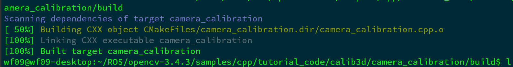
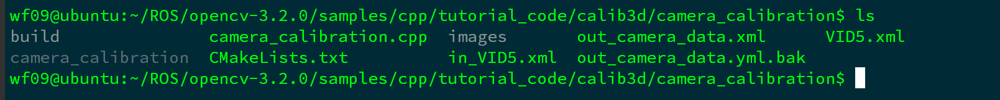
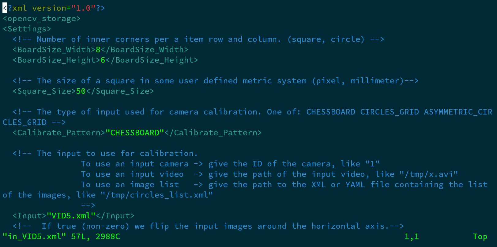
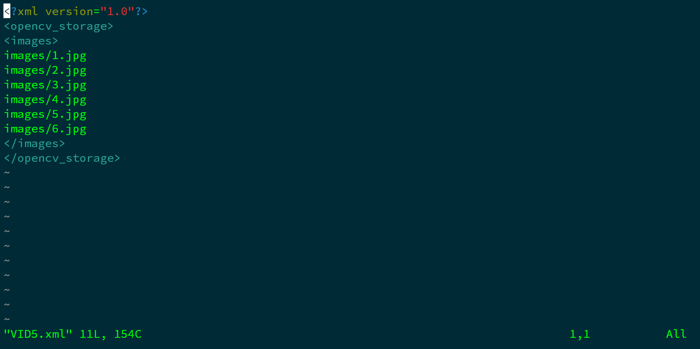
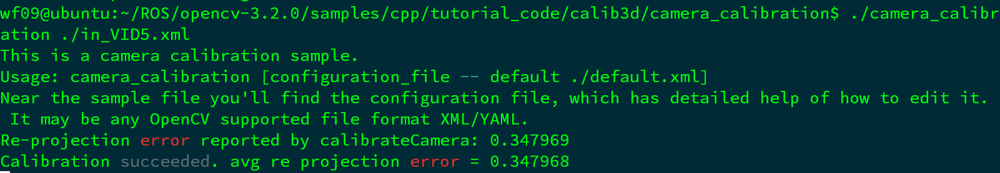
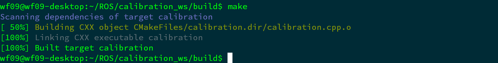
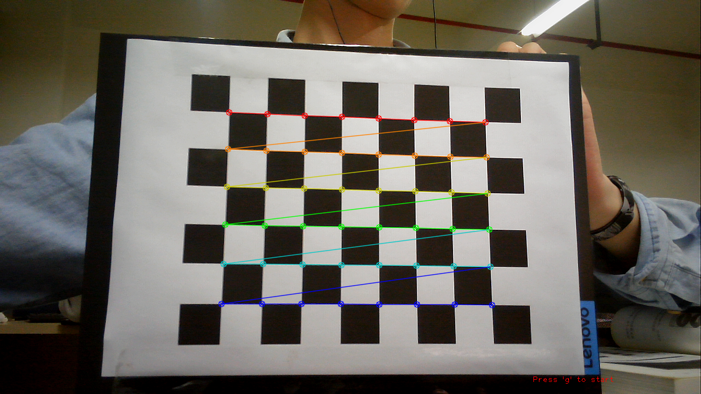
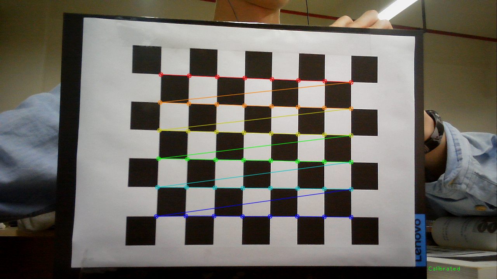
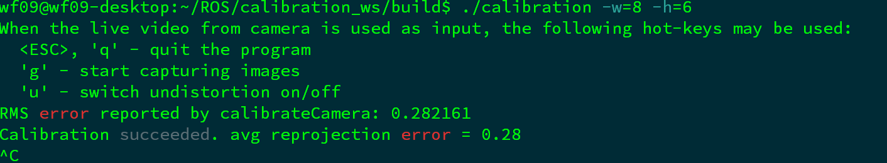

ROS实战（三）｜相机标定
最近的小车需要用到ROS，学习的过程做个记录。
今天写的主要是使用opencv进行相机标定（Camera Calibration）的步骤。
下载opencv源码
这里用到的源码版本是opencv3.2.0，操作环境是Ubuntu 18.04 LTS。
1 | wget https://github.com/opencv/opencv/archive/refs/tags/3.2.0.tar.gz |
使用已有的图片进行标定
编译camera_calibration.cpp
进入指定目录
1 | cd opencv-3.2.0 |
创建CMakeList.txt文件
1 | vim CMakeLists.txt |
复制下列代码到文件.
1 | cmake_minimum_required(VERSION 2.8) |
编译
1 | mkdir build |

修改参数
编辑同级目录下的in_VID5.xml文件，根据标定靶的行数和列数来修改参数。这里的使用的标定靶一共有6行，每一行有8个内部角点。


其中VID5.xml存放的是标定图片路径，一般图片应不少于3张，图片越多标定效果越好。

标定
1 | mv build/camera_calibration . |

生成的out_camera_data.xml就是标定后得到的参数文件。
使用视频对摄像头进行标定
编译calibration.cpp
进入指定目录
1 | cd opencv-3.4.3 |
创建CMakeLists.txt文件
1 | cmake_minimum_required(VERSION 2.8) |
编译
1 | mkdir build |

标定
1 | chmod +x calibration |
这里的h指的是标定靶一共有6行，w指的是每一行有8个内部角点。
按g键开始标定。

标定完毕。

